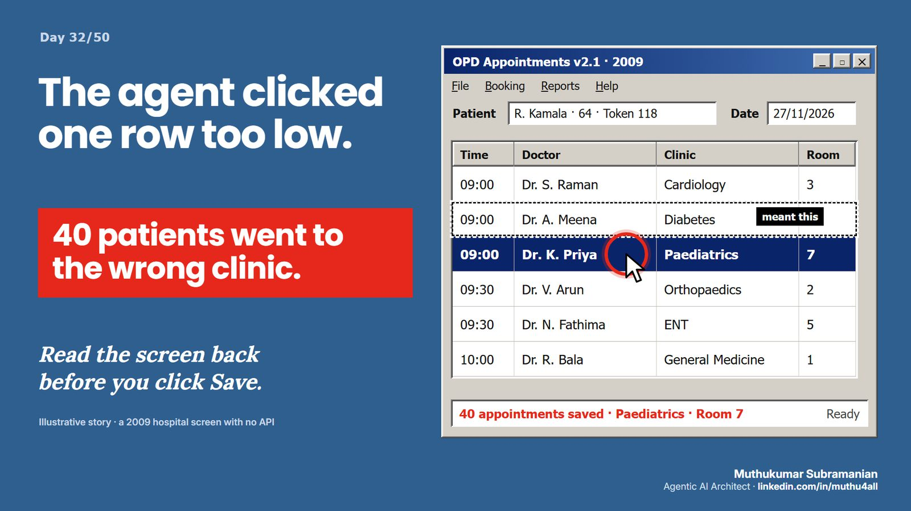
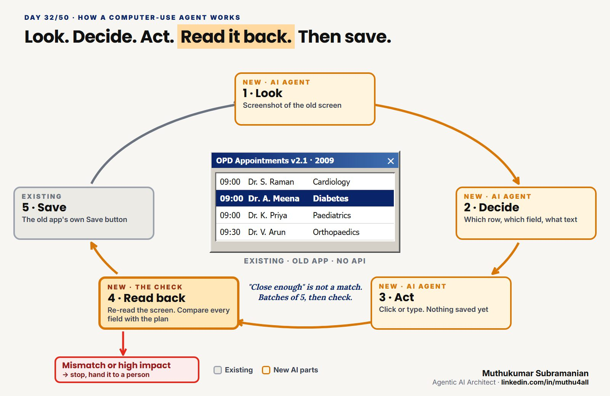
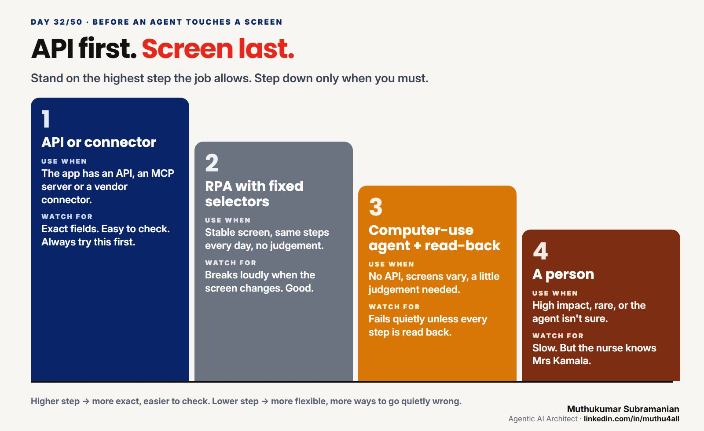
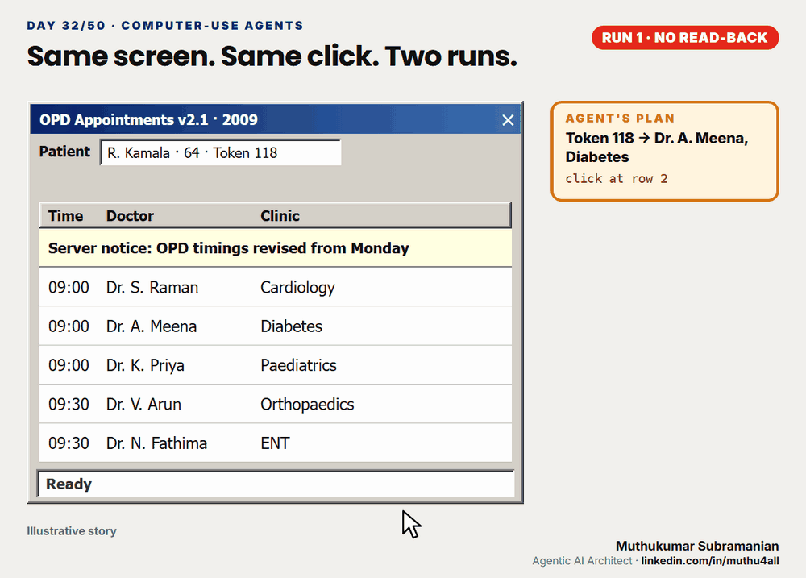

The AI Agent Clicked One Row Too Low. 40 Patients Went to the Wrong Clinic.
By Muthukumar Subramanian · Agentic AI Architect

Monday, 10:40 AM, the OPD of a 300-bed hospital in Madurai. The paediatric clinic nurse looks at her list and frowns. Forty names. Most of them over 55. Mrs Kamala, 64, Token 118, is sitting outside Room 7 with her diabetes file, between a crying toddler and a mother with twins.
Every one of those 40 should have been with Dr Meena in the diabetes clinic. They were booked by an AI agent.
(The hospital, the people and every number here are illustrative. The pattern isn't.)
Here's what happened. The hospital's appointment system dates from 2009. No API, no vendor support, one desktop screen with a grid of doctors and clinics. Over the weekend, a server notice bar that had sat at the top of that grid for months was finally removed. Every row moved up by one. The agent had learned where the diabetes row was. It clicked where the row used to be.
Nobody was hurt. That was luck, not design.
The architecture today: an agent that uses the screen like a person
Most of what India runs on still has no API. Hospital systems, old ERP screens, government and insurer portals, the 2006 Java app that only works in one browser. For years the answer was a person copying from one window to another, or an RPA bot that broke whenever a button moved.
Computer-use agents are the new option. Anthropic put computer use into public beta in October 2024. OpenAI's Operator arrived in January 2025 and has since been folded into ChatGPT agent. Google released its Gemini 2.5 Computer Use model in October 2025, and says versions of it power Project Mariner. The loop is the same in all of them:
→ Look: take a screenshot of the screen.
→ Decide: the model works out which field, which row, what to type.
→ Act: move the mouse, click, type. Then look again.
Fast, flexible, no integration project. And nothing in that loop checks that the click did what the agent meant.

Where AI plugs in now: read first, write later
The low-risk start is to let the agent read old screens and never touch Save.
→ It reads the appointment grid and builds the morning list for the front desk.
→ It drafts the booking, field by field, and a person clicks Save.
→ It flags mismatches: a patient booked into a clinic that doesn't match their referral.
That alone takes hours of copying off the front-desk team, and a wrong click costs nothing because a person still makes the change.
Where it's heading with agents: act, then prove it
In two or three years, agents will book, update and file inside old systems on their own. The ones I'd trust will have a verification layer that's separate from the clicking:
→ Read-back before submit. After filling the form, the agent re-reads what's actually on the screen and compares every field with its plan: patient, doctor, clinic, time. Any mismatch → stop.
→ Find things by their text, not their position. "The row that says Dr A. Meena, Diabetes", never "row 2".
→ Small batches. Book 5, check the saved records in the app's own report, then the next 5. Not 40 in one go.
→ Human review for high-impact steps: anything clinical, anything that can't be undone, anything the agent is unsure of.
→ An API wherever one exists. The screen is the last resort, not the default.
The vendors say much the same. Anthropic's documentation for its computer-use tool tells developers to keep a human confirmation step for consequential actions. UiPath's guidance for its ScreenPlay agent is to keep workflows as deterministic as possible and use the agent only where you need it.
A screen is an interface for humans. When an agent uses it, someone still has to check the work.

Watch it work
Same screen, same click, two runs.

Pros
→ Old systems with no API get automated without touching their code
→ One agent can work across screens that RPA would need a separate bot for
→ It handles small changes (a renamed button, a new pop-up) that break fixed scripts
Cons
→ It fails quietly. RPA crashes when the screen changes. An agent clicks the wrong thing and carries on.
→ It's slow and costly per step compared with an API call
→ Anything on the screen is input, including text that tries to give it instructions. A web page can carry a prompt injection; an old app can still show an odd pop-up.
The hard parts
The read-back can share the agent's blind spot. If the same model reads the same screenshot, it can misread it the same way twice. Better: check through a different channel, like the app's own report, a printout, or the record count in the database, read-only.
Screens drift. Display scaling, a new monitor at the front desk, a Windows update, a notice bar someone finally closes. You need a test that runs every morning before the agent does.
Audit gets murky. In the hospital's log, all 40 bookings show the front-desk login the agent used. Give the agent its own user ID, even on a 2009 system, so the record says who did it.
And honestly, I don't know yet how well these agents do over months of daily use in a real hospital. The benchmarks are improving fast, but a benchmark is a clean desktop. An OPD on a Monday isn't.
I've been in IT for 25 years, at Infosys and then as a consultant and fractional executive, across everything from legacy systems to agentic AI. The 2009 screen outlasts every plan to replace it. That's exactly why it needs care.
Two roles fit here. A forward deployed engineer (FDE), an engineer who works inside the customer's team on their real systems, sits at the OPD front desk for a week and maps every screen, pop-up and odd case before the agent touches one. An AgentOps Engineer, the person who runs agents in production the way SREs run servers, watches the screen-drift test and the mismatch rate every morning. The titles are still settling. The work is real.
Yesterday I wrote that most jobs need a checklist, not an autonomous agent. This is that idea at the level of a single click. And with it, Phase 3 of this series closes.
The opportunity
Who pays: hospitals, insurers and TPAs, banks with old core screens, logistics firms, and government departments. Anyone whose work runs through software that will never get an API.
What it creates:
→ Verification layers: read-back, field matching and stop rules that sit beside any computer-use agent, from any vendor
→ Screen-drift monitoring: a daily test that catches the moved row before Monday's OPD does
→ Playbooks per legacy app: every screen, every pop-up, every "never click this", written down by an FDE
→ Agent-first, API-later projects: automate the screen safely now, and use the agent's logs to design the API the app should have had
→ Audit trails that show which agent made which booking, on systems that were built for one human per login
Tools to try
Anthropic's computer use tool (Claude) · OpenAI's ChatGPT agent and its computer-use model in the API · Google's Gemini 2.5 Computer Use model · UiPath ScreenPlay for enterprise desktop automation · Playwright and the open-source Browser Use library when the old app runs in a browser.
Your turn 👇
Would you let an AI agent click Save inside your hospital's or bank's oldest screen? Yes or no.
Tag the person in your team who still knows where every button on that screen is.
Day 32 of 50 · follow along. Tomorrow: Day 33 · Monday, 9 AM. Your Model Provider Is Down. Where Do Your AI Agents Go?